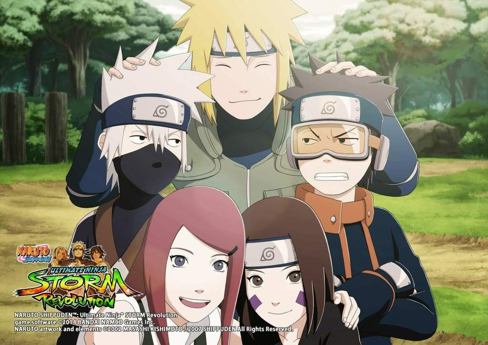

Curiosidades
Naruto Shippuden Storm Revolution
Para desbloquear todos os personagens de forma rápida no Naruto Shippuden: Ultimate Ninja Storm Revolution, o jogador pode optar pelo modo combate livre e acumular 1.600.000 ryō.
Quando o valor for alcançado, os personagens começam a ser liberados, um por vez.
Recomenda-se escolher personagens rápidos como Shisui ou Sasuke, pois são ágeis em combate e facilitam a obtenção da letra S ao final das batalhas, o que garante uma maior recompensa em ryō.
Além disso, cada jogador tem a opção de escolher dois ninjas de suporte, que podem ser utilizados para realizar técnicas especiais durante a luta.
Para que isso aconteça, é necessário escolher personagens que estejam ligados diretamente à história do anime.
Outras curiosidades sobre Naruto Shippuden: Ultimate Ninja Storm Revolution:
-
Sistema de Suporte Dinâmico: Ao escolher os ninjas de suporte, o jogador pode ativar combos devastadores com personagens que têm sinergia com o protagonista escolhido, aumentando a diversidade de estratégias.
-
Jutsu de Suporte: O jogo introduz o sistema de Jutsu de Suporte, que permite aos personagens de suporte realizar ataques assistidos durante a luta, o que pode ser decisivo para a vitória, especialmente contra oponentes mais difíceis.
-
Modo História Expansivo: O jogo oferece um modo história bastante detalhado, cobrindo a série de Naruto Shippuden, mas também expandindo um pouco com personagens e cenários inéditos. A narrativa foca em eventos-chave do enredo do anime.
-
Personagens Originais: Um dos destaques do jogo é a introdução de personagens inéditos, como o Mecha Naruto, uma versão robótica do próprio Naruto criada para o jogo, e Killer Bee com seu modo de combate único.
-
Modo Online: Além dos modos offline, o jogo também oferece um robusto modo multiplayer online, onde jogadores de todo o mundo podem batalhar entre si. Isso permite que os fãs desafiem uns aos outros e mostrem suas habilidades.
-
Estilos de Luta e Combos: O jogo permite personalizar os ataques e combos de cada personagem, o que aumenta as opções estratégicas durante as batalhas. Cada personagem tem um estilo de luta único, desde ataques rápidos até técnicas poderosas de longa distância.
-
Personagens Secretos e Alternativos: Além dos ninjas tradicionais, existem alguns personagens secretos e variações alternativas de personagens que podem ser desbloqueados após alcançar certos objetivos ou completar desafios específicos.
Essas mecânicas e características tornam o jogo bastante completo e divertido, com muitas possibilidades tanto para quem curte batalhas intensas quanto para quem quer explorar mais a fundo a história e o mundo de Naruto Shippuden.
